Aline Neves
Depoimento em breve.
Eliabes Neves
Role para conhecer a história
Procurador do Estado de Rondônia
Filho de José e de Neyde. Menino de Rolim de Moura que acreditou que a justiça e a educação podem mudar o mundo.
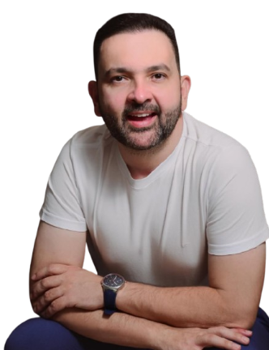
Antes da toga, da sala de aula e dos títulos, Eliabes é filho de José e de Neyde.
Nascido em Mato Grosso do Sul, chegou a Rondônia ainda criança. Foi em Rolim de Moura que formou as primeiras memórias da vida, e também os sonhos que o levariam a uma carreira voltada à transformação social.
Esta página é, antes de tudo, uma homenagem a quem lhe deu o chão, o nome e a coragem de sonhar alto: o pai, José Neves, e a mãe, Neyde.
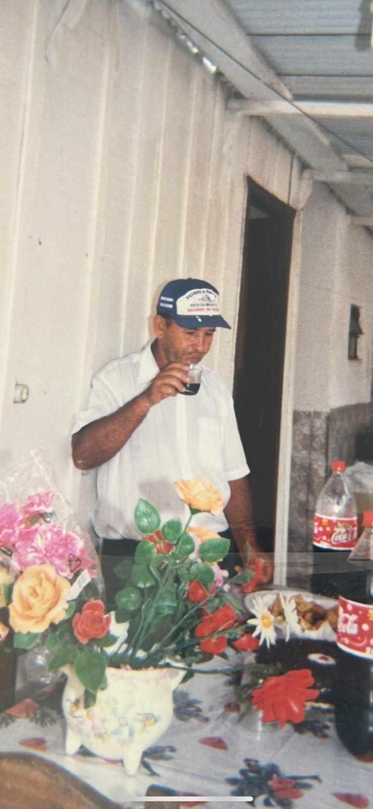
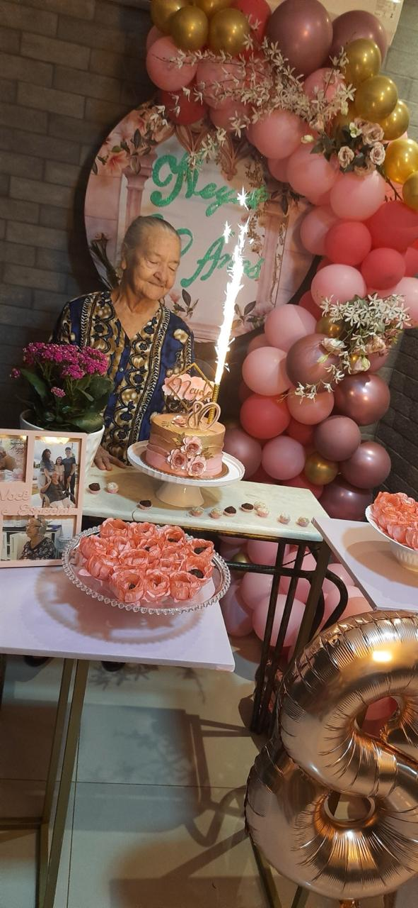
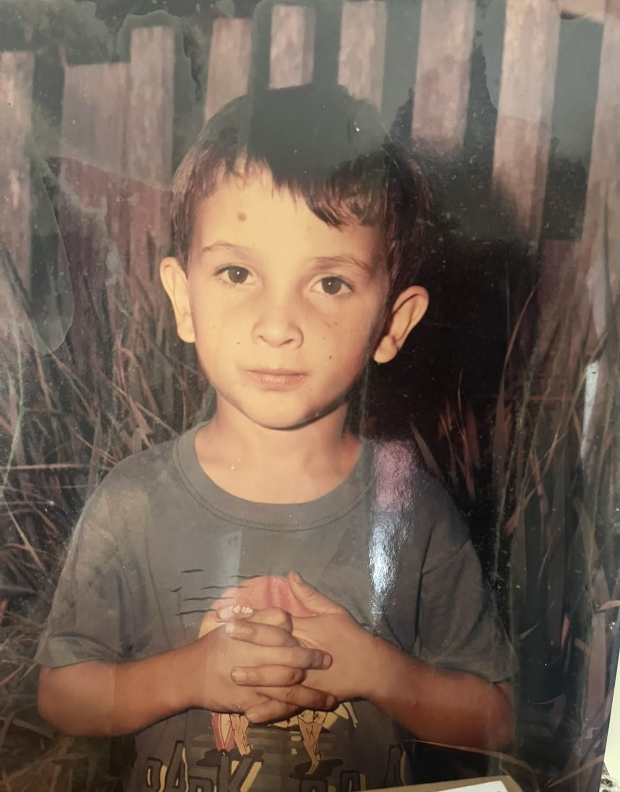
Hoje, aquele garoto que queria mudar o mundo acredita firmemente que a educação é capaz de mudar as pessoas.
Eliabes Neves
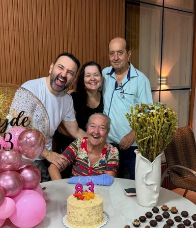
Do menino de Rolim de Moura ao homem que hoje defende o interesse público, uma coisa não mudou: a família continua sendo o lugar onde tudo faz sentido.
Da literatura ao direito, da graduação ao doutorado: uma vida de estudo e serviço.
Depois de concluir Letras, Eliabes atuou como professor em Nova Brasilândia e, ao mesmo tempo, cursou Direito na UNIR, em Cacoal. Filho de uma família humilde, construiu sua trajetória com estudo, trabalho e compromisso com as pessoas — até se tornar uma referência na advocacia pública em Rondônia.
Começa pela literatura, buscando entender como fazer a diferença no mundo. Graduação concluída em 2003 pela Universidade Federal de Rondônia.
Ingressa no curso de Direito e se encanta com a advocacia pública. Conclui em 2007 com um trabalho sobre o pregão eletrônico como modalidade de licitação.
Especialização na Faculdade Rolim de Moura (FAROL), com estudo sobre a coisa julgada inconstitucional.
Em 10 de abril, toma posse na Procuradoria-Geral do Estado de Rondônia (PGE-RO). No mesmo ano, passa a lecionar Direito na FAROL, onde é professor titular.
Pela UNIVALI (SC), pesquisa o fornecimento de medicamentos pelo Estado e os direitos fundamentais, com dados do município de Rolim de Moura. Defesa em 2022.
Estuda a responsabilidade civil do Estado por leis declaradas inconstitucionais.
Na UNIVALI, investiga a contratação pública no direito transnacional e um regime de contratação baseado em critérios de sustentabilidade no âmbito do Mercosul. Integra também o corpo editorial da Revista FAROL.
Segue na PGE-RO, em Rolim de Moura, na sala de aula e na representação da advocacia rondoniense.
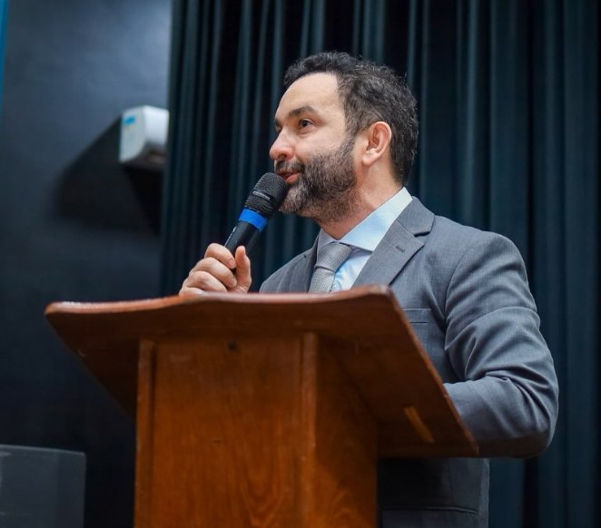
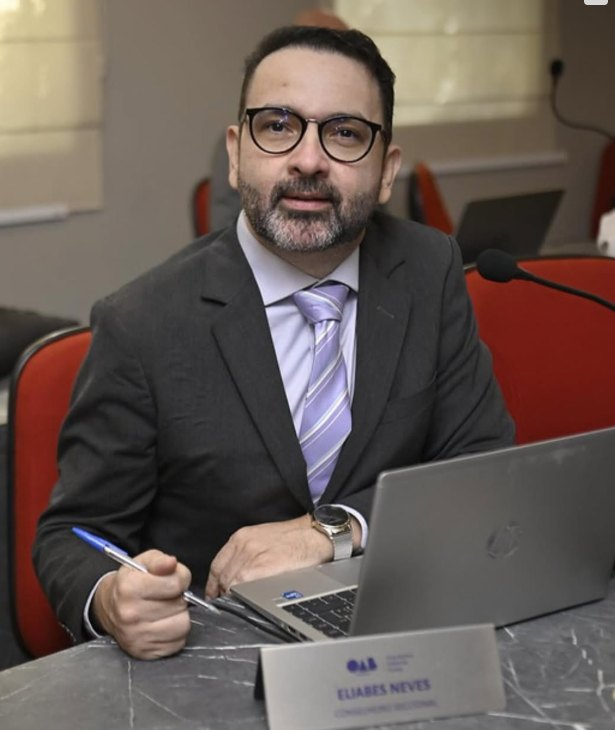
>Para Eliabes, da merenda escolar às grandes obras de infraestrutura, todo projeto passou um dia pelas mãos de um advogado público.
Ela representa a função que auxilia o gestor público a realizar políticas públicas que terão um impacto direto na vida do cidadão.
Eliabes Neves, sobre a advocacia pública
Na PGE-RO, as atribuições vão da consultoria jurídica às ações de governo até a defesa do Estado em juízo, passando pela gestão do patrimônio público e pela cobrança da dívida ativa.
Ela assegura que as políticas públicas sejam executadas dentro dos parâmetros legais e protege o interesse público.
Eliabes Neves
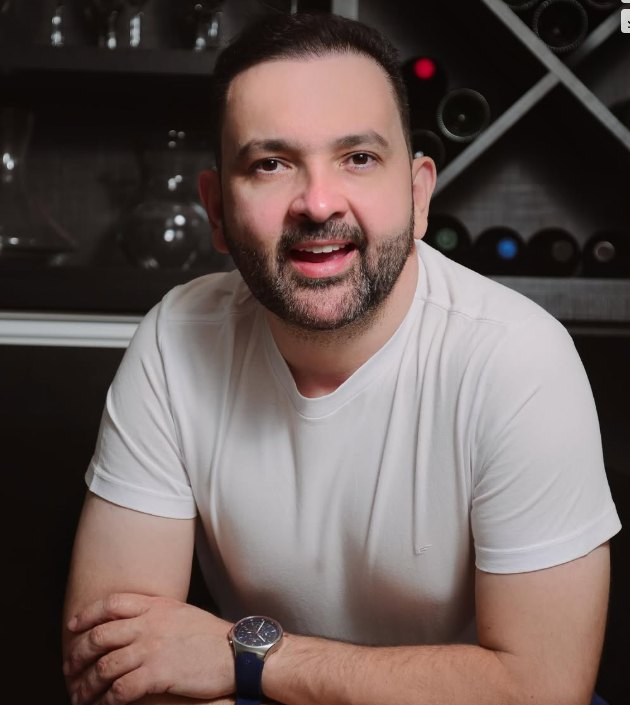
Desde 2014, Eliabes é professor titular do curso de Direito da Faculdade de Rolim de Moura (FAROL), onde leciona Direito Constitucional, Processual Civil, Direitos Coletivos, Direito Eleitoral e Introdução ao Estudo do Direito. Também atua na especialização em Direito Civil e Processual Civil.
Sua produção acadêmica passa por contratações públicas, sustentabilidade, direitos fundamentais e políticas de saúde. Alguns títulos:
Palavras da família para Eliabes, presença que une, acolhe e inspira.
Depoimento em breve.

Ao meu tio Eliabes ❤️ Existem pessoas que são presentes da vida, que chegam e tornam a caminhada mais bonita. Pessoas que inspiram só por existir, e que a gente tem orgulho infinito de assistir florescer e evoluir. Você é uma dessas pessoas, tio, alguém por quem tenho um carinho imenso, uma admiração que não cabe em palavras e um amor que carrego aqui dentro. Tenho orgulho da sua história, das suas batalhas e conquistas, da força que existe em quem você é e da luz que, mesmo sem perceber, transmite. Você me inspira mais do que imagina, e talvez nunca consiga entender o quanto é bonito olhar para você e encontrar alguém em quem me espelhar e aprender. Se a vida me desse mil caminhos para escolher, em todos eles eu gostaria de ter você. Porque, entre tantas pessoas que o mundo me apresentou, você é uma das mais especiais que meu coração guardou. Quero te ver vencendo, sorrindo e realizando, e estar por perto, de longe ou de perto, sempre torcendo e vibrando. Que a vida seja tão generosa com você quanto é especial ter você na minha vida. Eu te amo, tio, mais do que consigo escrever. E, se existe uma sorte que agradeço por ter, é a de poder olhar para você com tanto orgulho e, com todo o amor do mundo, dizer: que privilégio é ter você como meu tio! ❤️
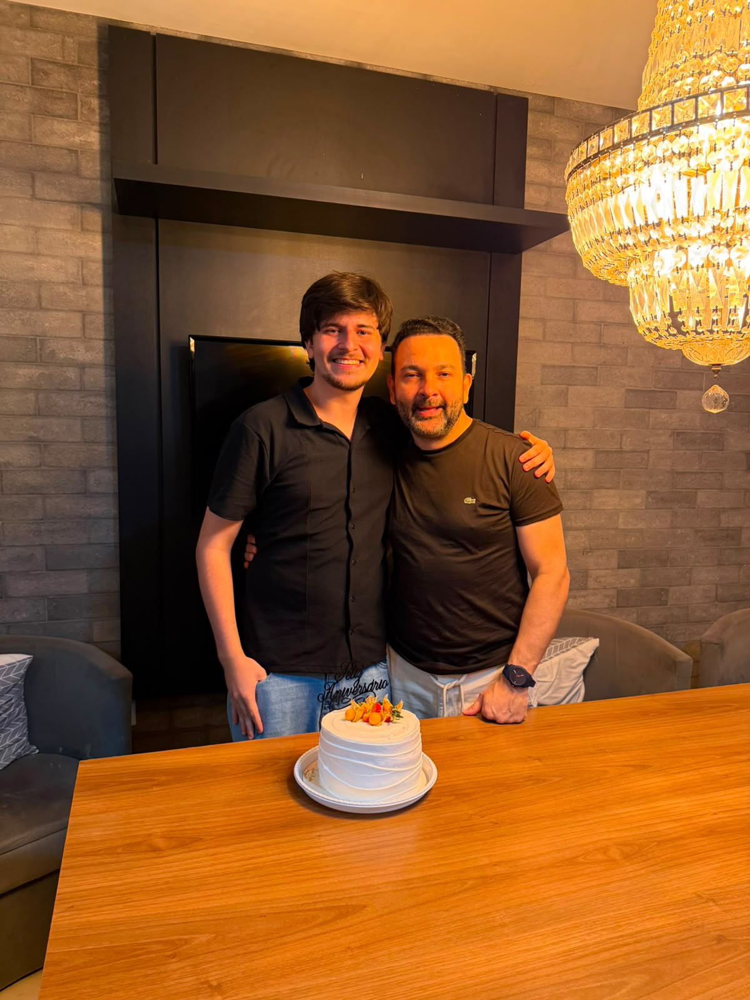
“O Eliabes é muito mais do que um tio incrível: ele é uma pessoa maravilhosa e o centro da nossa família. Ele está sempre pronto para apoiar a gente a qualquer momento. Às vezes, dá aquelas puxadas de orelha necessárias, mas sempre com o coração bom e a melhor intenção. É impressionante a capacidade que ele tem de manter toda a família unida! É sempre bom poder ter você por perto.”
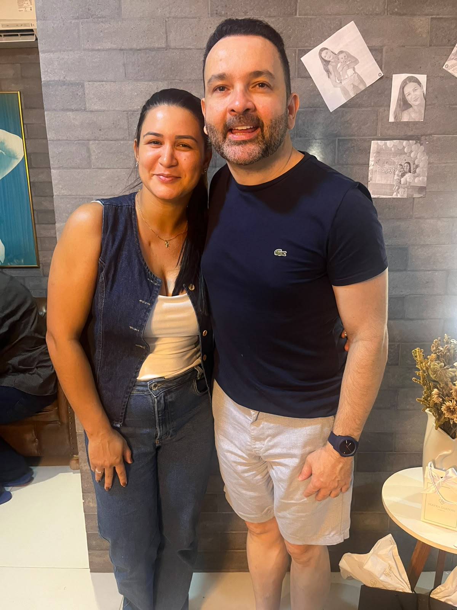
Eliiabes, você é uma pessoa muito especial, daquelas que tornam qualquer momento mais leve e feliz. Estar ao seu lado é sempre uma alegria, e o tempo parece voar quando estamos juntos. Temos uma admiração enorme por você, pelo coração generoso, pelo cuidado com todos e pelo amor que dedica à sua família. Jamais esqueceremos o carinho com que recebeu nosso filho desde os primeiros momentos de vida. São gestos que ficam guardados para sempre no coração. Temos muito orgulho da pessoa que você é e desejamos que a vida lhe retribua todo o bem que espalha. Que nunca lhe faltem saúde, felicidade e amor. Você é muito querido por nós! ❤️
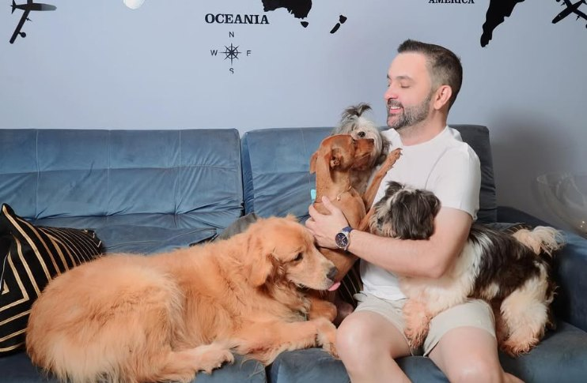
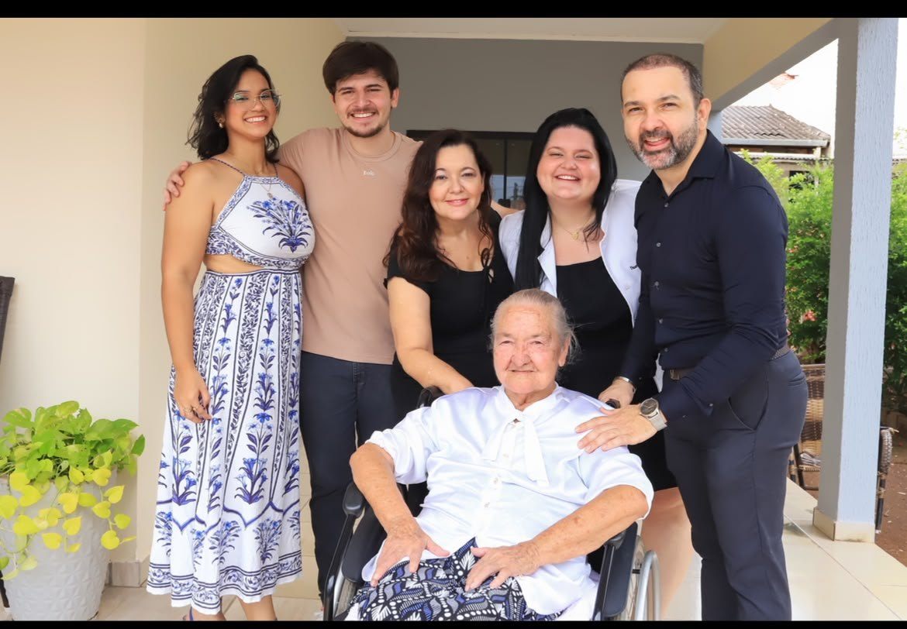
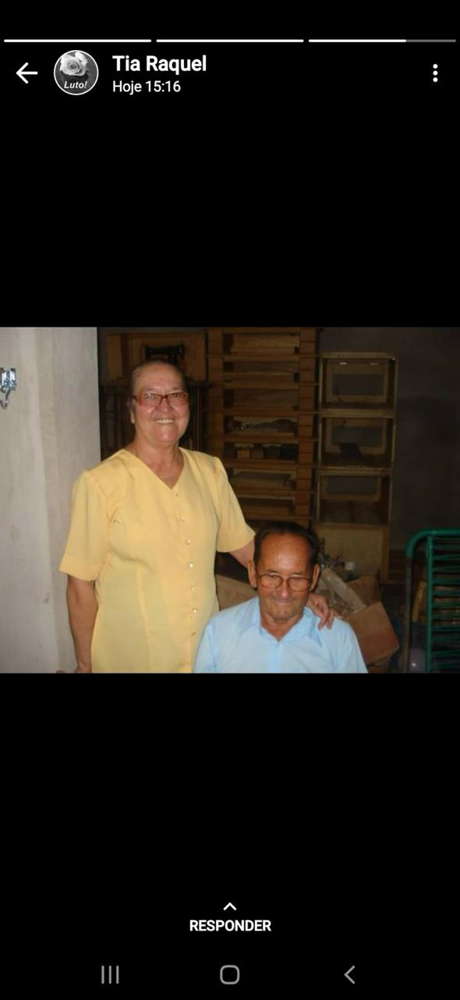